Preferences
Back to MIB | User Interface | Menu | File
The Preferences dialog lets you customize Microscopy Image Browser to suit your workflow,
from interface appearance to tool behavior and external integrations.
Open it via Menu -> File -> Preferences.
Settings are grouped into categories, accessible through a tree on the left,
making it easy to tweak everything from fonts to undo history.
Overview
The dialog organizes settings into six categories, shown as nodes in the Categories Tree on the left side:
{kind=link}
- User Interface: controls fonts, GUI scaling, mouse actions, and update checks settings.
- Colors and Styles: sets colors for models, masks, annotations, and contour styles.
- Backup and Undo: configures undo history for 2D and 3D operations.
- External Directories: specifies paths for external tools like Fiji or Python.
- Keyboard Shortcuts: defines custom key bindings for MIB actions.
- Segmentation Tools: adjusts settings and options for segmentation tools.
At the bottom, you’ll find buttons to manage changes:
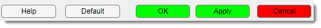
- : opens help documentation for the Preferences dialog.
- : restores all settings to their original values.
- : saves changes and closes the dialog.
- : saves changes without closing.
- : discards changes and closes.
Use the Categories Tree to switch between panels. Click a node (e.g., User Interface) to show its settings. Changes are saved only when you click OK or Apply.
User Interface
This category customizes how MIB’s interface looks and behaves, covering fonts, scaling, mouse interactions, and update frequency.
GUI Tweaks
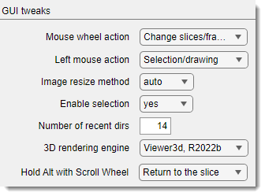
Fine-tune how the mouse and rendering work:
: a dropdown to set the mouse wheel’s function:
Zoom In/Out: zooms the image.Change slices/frames: switches between slices or time frames (default).
: a dropdown to assign the left mouse button’s role:
Pan image: Moves the image.Selection/drawing: Enables drawing and segmentation (default).
Info
selecting any of these options swaps the mouse button so that
: a dropdown to choose how images are interpolated for visualization in the Image View Panel:
auto: usesnearestfor >100% zoom,bicubicfor <100% (default).nearest: fastest, lower quality.bicubic: slowest, highest quality.
: a dropdown to toggle existence of the Selection layer:
yes: Enables segmentation tools (default).no: Saves memory but disables segmentation.
: a numeric field to set how many recently accessed directories MIB remembers.
Where to find recently used directories
the previously accessed directories available via a dedicated dropdown in the Path panel.
: a dropdown to select the engine for 3D visualization:
Viewer3d, R2022b: Modern engine, available in R2022b or newer version of MATLAB (default).Volshow, R2018b: Legacy engine, available in R2018b or newer.
: a dropdown to define behavior when holding Alt while scrolling:
Return to the slice: returns to the current slice upon release of Alt (default)Scroll time points: Alt + mouse wheel scrolls through time points.
Update Check
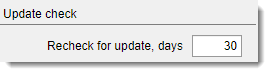
Set how often MIB looks for a new version:
: a numeric field (minimum 1) to define the interval between update checks (default: 30 days).
Font
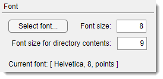
Adjust the font used across MIB interface:
- : a button that opens a font selection dialog. The chosen font is displayed in the Current Font label field below.
- : a numeric field (minimum 1) to set the font size for GUI widgets, like buttons and labels.
- : a numeric field (minimum 1) to set the font size for the file list in the Directory Contents Panel.
GUI Scaling
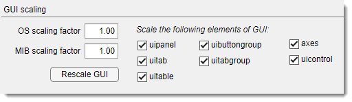
Scale MIB’s interface, useful for high-DPI screens or accessibility:
: a numeric field to input the operating system’s scaling factor (as ratio vs 100%), ensuring accurate mouse coordinates.
How to find scaling factor on Windows
Do
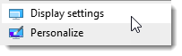
Find the scaling factor and type it as value in %% divided by 100 (i.e. 1 for the snapshot below):
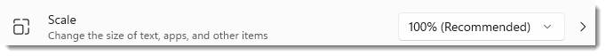
: a numeric field to scale selected GUI elements, such as panels or tables specified as a ratio relative to default size.
Warning
The scaling is done relative to initial size of MIB widgets rendered at MIB startup
It is possible to configure each element specifically as on some MacOS versions the scaling needs to be done excluding some widgets.
- : scales panel containers.
- : scales tab elements.
- `: scales tables.
- : scales button groups.
- : scales tab groups.
- : scales axis displays.
- : scales other control elements like buttons.
: press the button to instantly apply scaling changes to MIB’s main window.
Warning
Press of the button is always rescales MIB interface relative to the current state. If after the initial resizing step, you feel that additional scaling is needed, try to estimate how much the scaling factor needs to be relative to the initial size of MIB interface. Set this value and restart MIB!
Colors and Styles
{kind=link}
This category lets you customize colors for materials of the model, color channels, layers, and contours, as well as rendering styles.
Palette generator
Generate color palettes from several predefined presets for visualization of materials within the Segmentation table.
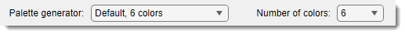
- : a dropdown to pick predefined color palettes for the tables.
- : a dropdown to set the number of colors in the generated palette, depending on the selected preset.
Colors of the materials table
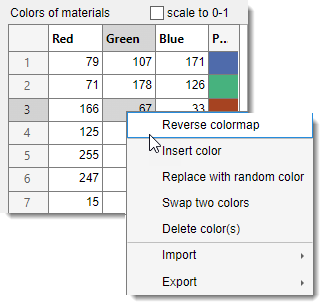
The table shows the colors of materials that define visualization of the model. The colors can be changed by typing intensity
value for each Red, Green, Blue channels in range from 0-1 or 0-255 (depending on )
or by
- Reverse colormap: press to reverse the order of colors in the palette
- Insert color: insert a new random color at the following row in the table
- Replace with random color: replace the selected color with a random color
- Swap two colors: swap the selected color with another one
- Delete color(s): delete selected color from the palette
- Import (from MATLAB or file): import a palette from the main MATLAB workspace or from a file
- Export (to MATLAB or file): export the current palette to the main MATLAB workspace or to a file
: a checkbox to normalize colors between 0 and 1, otherwise the colors are scaled between 0 and 255.
Update material colors directly from the Segmentation table
The colors can be changed via a context ment of the Segmentation table -> Color scheme...
{kind=link}
Colors for LUT and image layers
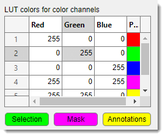
LUT Colors for Color Channels - is a table with columns for Red, Green, Blue, and a Preview, used for
definition of LUT (Look Up Table) colors to visualize individual color channels of the dataset.
The LUT color channel is also available from the View Settings panel. Whenever is checked in the View Settings->LUT table
these colors are used.
: a button to specify color to be used for rendering of the Selection layer
: a button to specify color to be used for rendering of the Mask layer
a button to specify color to be used for rendering of annotations
Contours
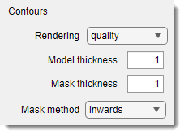
Adjust how contours are drawn for models and masks:
: a dropdown for contour rendering method:
quality: high-quality rendering (default).performance: faster, but touching objects use the earlier material’s color.
: a numeric field for line thickness in Contour mode for models (default: 1).
: a numeric field for line thickness in Contour mode for masks (default: 1).
: a dropdown for Mask contour direction:
inwards: Shrinks the mask object (default).outwards: Grows the mask object.
Masks
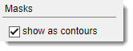
Control Mask layer appearance:
: show the Mask layer as contours instead of filled shapes (default)
show the mask as filled shape
Examples of different mask visualization styles
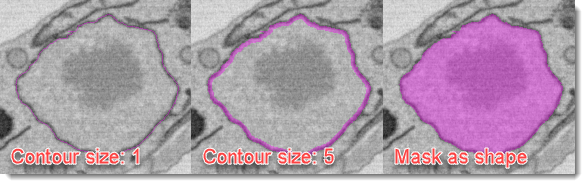
Backup and Undo
{kind=link}
Configure undo functionality for editing operations:
: a checkbox to turn on undo support.
: a numeric field (minimum 0) for the total number of 2D and 3D operations to store. Higher values save more steps but use more memory. : a numeric field (minimum 0) for 3D operations only. Must be smaller than the total history steps.
Tip
The backup and undo system requires additional allocation of memory and slows down performance.
Balance memory usage and undo needs by setting reasonable history limits, especially for large datasets.
External Directories
{kind=link}
Specify paths for external tools and packages that integrate with MIB. Leave fields empty if you don’t use a particular package.
: a text field and to set the path
to Fiji, see more in the System requirements section.
: a text field and to set
the path to OMERO, see more in the System requirements section.
: a text field and
to set the path to Imaris, see more in the System requirements section.
: a text field and
to set the path to BM3D, see more in the System requirements section.
: a text field and
to set the path to BM4D, see more in the System requirements section.
: a text field and to set the temporary directory for Bioformats Memoizer.
Use any temporary directory available on your system. The created files can be removed any moment.
: a text field and
to set the DeepMIB and SAM network storage paths.
: a text field and
button to set the path to Python, required for SAM, see more in the System requirements section.
Keyboard Shortcuts
{kind=link}
Customize key bindings for quick access to MIB actions:
- Shortcuts Table: A table to edit key bindings. Click a cell to assign a key combination.
- Pressed Key: A label showing the last key pressed (e.g., Ctrl + S) when the panel is active. Click the panel and press a key to test.
- Reset: A button to restore default key shortcuts.
Warning
Ensure the Keyboard Shortcuts panel is selected to capture key presses for testing.
Segmentation Tools
{kind=link}
Adjust settings for segmentation tools, including interpolation, annotations, and favorites.
Annotations
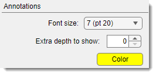
Customize how annotations appear:
: a dropdown for annotation font size: - Options: 1 (pt 8), 2 (pt 10), 3 (pt 12), 4 (pt 14), 5 (pt 16), 6 (pt 18), 7 (pt 20) (default: 1).
: a spinner (minimum 0) to extend annotation visibility
across slices (e.g., 3 shows annotations 3 slices before and after).
: a button to pick the annotation color (same as in Colors and Styles).
Tip
Style for the annotations can also be specified in the Annotation list -> Settings window
Interpolation
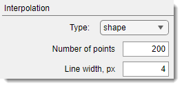
Configure how MIB interpolates between points:
: a dropdown to choose the interpolant:
shape: Best for blobs (default).line: Suited for non-closed linear objects.
: a numeric field for points used in interpolation.
Higher values improve quality but slow performance.
: a numeric field for the thickness of lines in line interpolation.
Favorite Tools
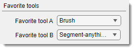
Set quick-access segmentation tools:
: a dropdown to select a tool accessed via Shift+D:
- Options: 3D ball, 3D lines, Annotations, Brush, BW Thresholding,
Drag & Drop materials, Lasso, MagicWand-RegionGrowing, Membrane ClickTracker, Object Picker,
Segment-anything model, Spot (default: Brush).
- : a dropdown to select a tool accessed via Ctrl+D:
- Same options as Favorite Tool A (default: Segment-anything model).
c
Back to MIB | User Interface | Menu | File